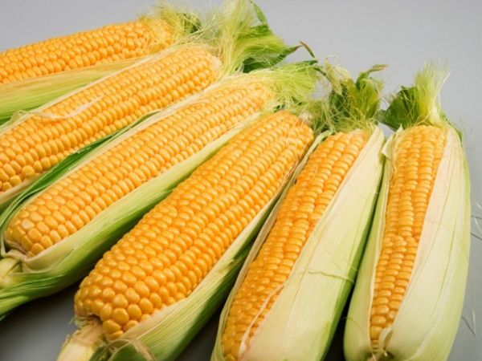

Milet Merah Dan Putih
Milet murah dan putih memang sebenarnya makanan kesukaan semua burung kicau namun burung lovebird yang paling suka dengan makanan tersebut, milet putih dan merah sendiri memiliki banyak sekali khasiatnya untuk lovebird.
Adapun manfaat dari milet putih dan merah yaitu bisa untuk memberikan ketahanan daya tubuh terhadap lovebird, juga dipercaya membantu lovebird lebih cepat gacor. Walaupun belum ada penelitiannya terkait dengan bahan makanan tersebut namun sudah banyak yang terbukti. Untuk pemberian makanan milet putih dan merah Anda bisa memberikannya setiap hari pada waktu pagi hari dan waktu sore hari. Dengan diberikannya milet ini akan menjamin bahwa burung lovebird akan cepat gacor sesuai dengan yang Anda inginkan namun juga harus di imbangi dengan perawatan yang intensif dan latihan yang teratur.
Jagung Manis
Banyak yang beranggapan bahwa jagung manis merupakan salah satu makanan burung lovebird yang paling favorit dan bahkan hampir semua burung kicau menyukai menu makanan ini jagung manis dipercaya memiliki manfaat yang sangat bagus untuk lovebird. Salah satunya yaitu bisa menjaga kesehatan mata lovebird juga dapat membantu menjaga daya tahan tubuh lovebird. Adapun kandungan yang terdapat pada jagung manis yaitu vitamin B dan C, Asam Folat dan Beta Karoten.
-
Beberapa jenis makanan lovebird
- Milet merah dan putih
- Jagung Manis
- Buah Apel Merah
- Biji Kenari